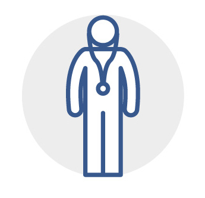
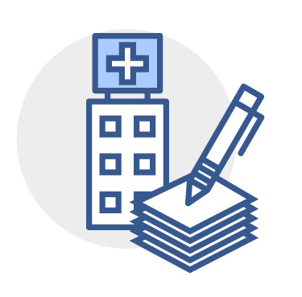

홈›건강소식 및 블로그›블로그
소화기내과 전문의가 전하는 건강 정보를 네이버 블로그에서 만나보세요.

위내시경 검사 전 올바른 금식 방법과 주의사항을 소화기내과 전문의가 상세히 설명합니다.

대장내시경 검사 중 용종을 제거했다면 이후 관리가 중요합니다. 식이 제한, 활동 제한, 추적 검사 시기까지 알아야 할 모든 것.
위암·대장암·간암·유방암·자궁경부암 국가검진 대상자 기준과 검진 방법을 정리했습니다. 올해 해당 연도 출생자라면 꼭 확인하세요.
전문의 직접 상담 예약으로 정확한 진단을 받으세요.